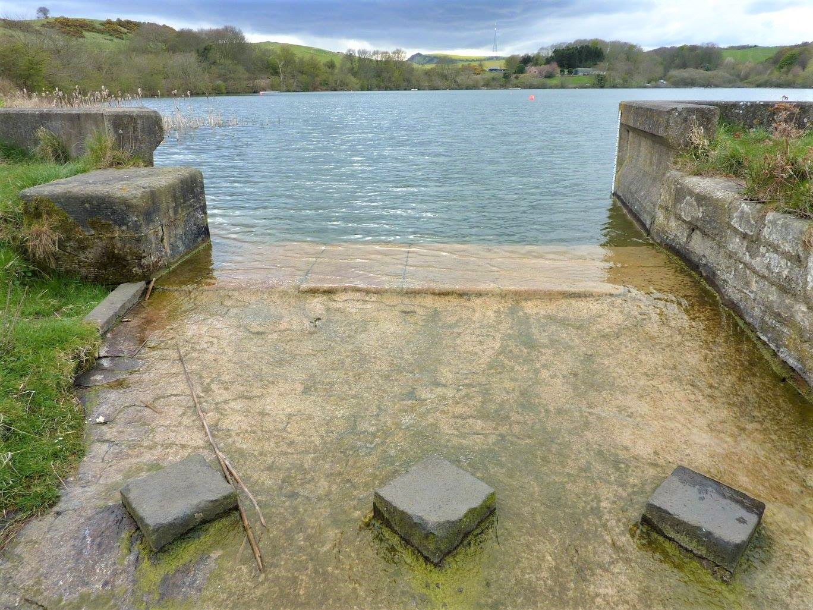

Topography and Geological Development
Fife, situated within the Scottish Central Lowlands, possesses a rich and complex geological story spanning hundreds of millions of years. Its evolution includes the formation of deep basement rocks, episodes of sedimentation, coal formation, and significant volcanic activity — all of which shaped the landscape we recognise today.
- Precambrian: The oldest rocks, mainly metamorphic and igneous, lie buried deep below the surface.
- Devonian: The deposition of Old Red Sandstone occurred in a hot, arid environment.
- Carboniferous: Extensive delta systems, coal measures, limestone layers, and volcanic intrusions; these strata underpinned Fife’s later coal industry.
- Permian to Jurassic: Dominated by erosion, leaving only a sparse sedimentary record.
- Tertiary: Episodes of uplift and erosion continued, with occasional volcanic influence.
- Quaternary: Ice Age glaciations carved the modern landscape, depositing tills, sands, gravels, and leaving behind raised beaches.
Key features such as the Lomond Hills (volcanic origin), the coastal sedimentary exposures, and the former coalfields together tell the story of Fife’s long geological journey.
The Firth of Forth: A Glacial Fjord
The Firth of Forth is a striking example of a fjord — a valley over-deepened by glacial erosion and later invaded by the sea.
During the Pleistocene glaciations, ice from the south-west Highlands was channelled through the pre-existing Forth Valley. Intense erosion took place where the ice stream accelerated between the Ochil Hills and the uplands south of Stirling.
Beneath today’s estuary lies a rock floor gouged far below sea level. Borehole records, meticulously collated by geologist Brian Sissons, reveal a complex valley profile:
- Rock basins west of Stirling descend up to 200 metres below sea level, carved into softer Carboniferous rocks.
- Stirling Castle sits on a resistant sill, itself eroded and streamlined by the ice.
- Tunnel valleys, likely cut by pressurised subglacial meltwater, run beneath the Ochils and along the Forth’s axis.
- The deepest part lies near Grangemouth, with other basins upstream of the Forth Bridge.
To the east, the seabed drops to around 40 metres and deepens to 60 metres off St Abbs. Islands such as Inchcolm and Inchkeith rise abruptly from this submerged landscape.
Along the Forth’s shores, a sequence of raised beaches records post-glacial sea-level change, while seabed sediments (see Gatliff et al., 1994) preserve the transition from glacial to marine conditions over the past 15,000 years.
(Source: Landforms EU.)
Human Impact on the Forth’s Natural Environment
Human interaction with the Forth stretches back some 10,500 years, beginning with Mesolithic hunter-gatherers. These early settlers relied on the wild abundance of fish, shellfish, and woodland resources.
- Neolithic farmers introduced herding and cultivation, leaving behind huge shell middens — some 6,000 years old — that testify to intensive oyster gathering.
- Medieval changes brought the introduction of sheep and rabbits to the Forth’s islands, stripping scrub cover and diminishing seabird populations.
- Early fisheries once thrived, supporting coastal burghs and towns. By the Victorian era, however, over-exploitation destroyed the oyster beds near Edinburgh and the centuries-old herring fisheries.
Industrial pollution in the 19th and 20th centuries compounded the decline, with sewage and waste pouring into the estuary. Only in recent decades has the Forth recovered, thanks to improved regulation and conservation. Today, although large commercial fisheries are gone, the estuary supports healthy populations of seabirds such as puffins and gannets, alongside growing numbers of grey seals. While its vast natural resources are unlikely to return to former levels, the Forth is now cleaner than it has been for centuries.
(Source: Chris Smout, Forth Estuary Forum.)
Kinghorn and Its Natural Setting
Kinghorn Loch
Once heavily polluted, the loch has undergone a remarkable recovery (Case Study) and is today a thriving natural habitat. The loch and it's spillway ( Photo  ) remain central features of Kinghorn’s landscape.
The History of Kinghorn Loch introduced by Ron Edwards. The geological, agricultural and industrial history of the loch including it's pollution and recovery.
Coastal Geology
The shoreline from Burntisland to Kirkcaldy is one of Fife’s finest natural classrooms. The Abden Shore in particular provides excellent exposures of Lower Carboniferous rocks, offering valuable insights into the region’s geological past. This stretch, around 1 kilometre in length, remains a popular site for field studies.
(See: Kinghorn Coastal GeoWalk)
Harbours and Marine Heritage
Graham's Archaeological Notes provide detailed information on the harbours of eastern Scotland. See Pettycur harbour on page 261 and Kinghorn Harbour on page 247.